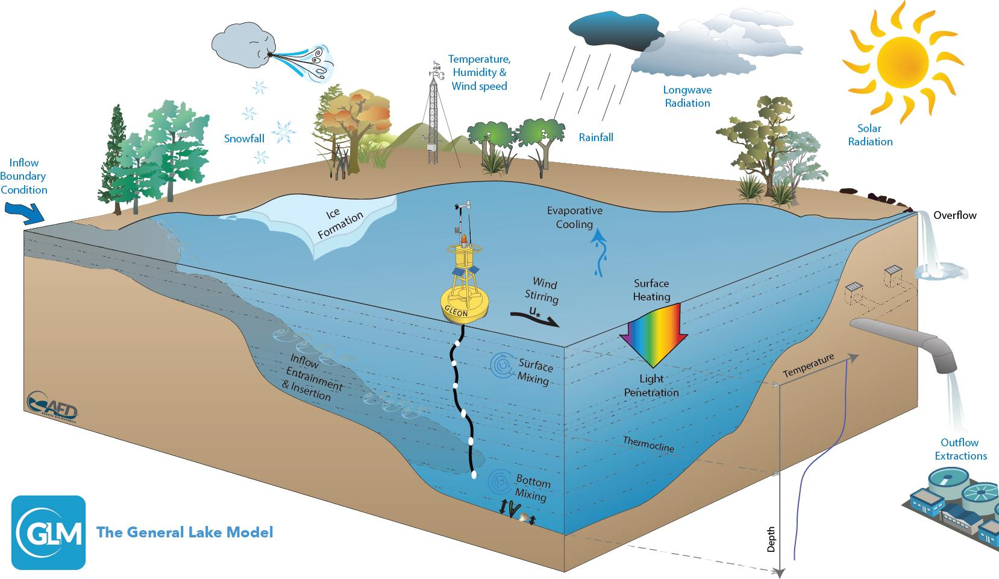
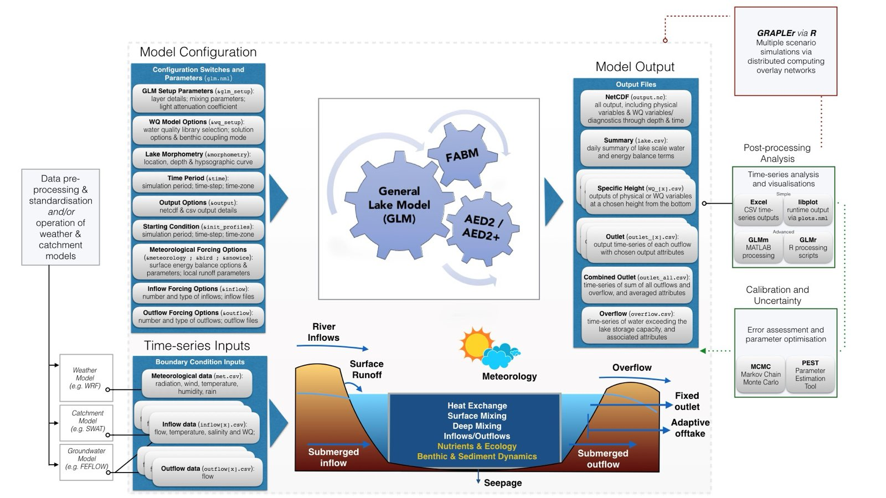

The General Lake Model
An open-source, one-dimensional model of lake and reservoir hydrodynamics — water balance, vertical stratification and mixing — coupled with the AED water quality library.

Documentation
Workbook
Start here if you are new. Introductory exercises that take you from installing the model to a first working simulation.
Background
What GLM is, where it came from and how a simulation fits together. Further down this page.
Wiki
User and developer information — downloading, installing and running the model, navigating its output, building from source, and the FAQs.
Configuration reference
The full specification for detailed setup: every block and variable the
model reads from glm3.nml or glm4.nml, with types,
defaults and worked examples.
Model description paper
Hipsey et al. (2019), Geoscientific Model Development. The open-access description of the model and its scientific basis — cite this if you use GLM.
Publications
Studies that have applied or extended GLM, kept current through the model's Google Scholar profile.
AED science manual
The water quality module set — its parameters, its equations and the science behind them.
Examples
Worked simulations shipped with the repository, each complete with its configuration and input files.
Discussion
Questions, answers and announcements. The place to ask if something is not covered above.
Background
GLM simulates the water balance and vertical stratification of lakes, reservoirs, ponds and wetlands. It was designed to be an open-source community model, suited to environmental modelling studies where a simulation of a lake or reservoir is required. (It is not the General Linear Model, which shares the acronym.)
The model was developed as an initiative of the Global Lake Ecological Observatory Network (GLEON), in collaboration with the Aquatic Ecosystem Modelling Network (AEMON), beginning in 2010. It was first introduced in Leipzig at the 2nd Lake Ecosystem Modelling Symposium in 2012, and has since been applied to numerous lakes within the GLEON network and well beyond it.
For water quality and ecosystem health, GLM couples to the AED library and to the Framework for Aquatic Biogeochemical Models (FABM). The precompiled binaries in the repository include that coupling, so a water quality simulation needs no rebuild.
Scientific basis
GLM computes vertical profiles of temperature, salinity and density by accounting for inflows and outflows, mixing, and surface heating and cooling, including the effect of ice cover. Because the model is one-dimensional it assumes no horizontal variability, so it is worth confirming that the lake in question genuinely meets that assumption. It suits long-term investigations spanning seasons to decades, and coupling with biogeochemical models to explore how stratification and vertical mixing shape lake ecosystems.
The model uses a flexible Lagrangian layer structure, in the manner of several earlier 1-D lake model designs (Imberger and Patterson, 1981; Hamilton and Schladow, 1997). That approach was originally introduced in DYRESM, developed at the Centre for Water Research, and it lets layers change thickness — contracting and expanding in response to inflows, outflows, mixing and surface mass fluxes. Where enough energy becomes available to overcome the density gradient, two layers merge, and that is how mixing is accounted for. Layer thicknesses are adjusted to resolve the vertical density gradient as it develops. Unlike a fixed-grid design, numerical diffusion of the thermocline is limited, which is much of why the approach suits long simulations.
Many of the heating and mixing algorithms build on equations presented by Hamilton and Schladow (1997) and earlier studies, rewritten with a modernised code structure. GLM integrates with Lake Analyzer for deriving metrics of relevance to lake hydrodynamics, and can be driven from R, Python or MATLAB for calibration and scenario work.

glm3.nml or glm4.nml.